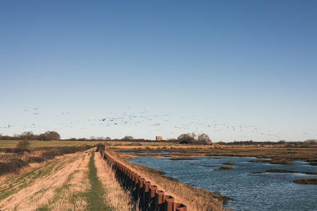
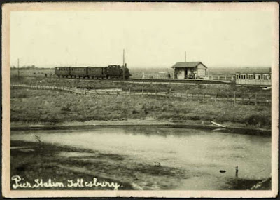
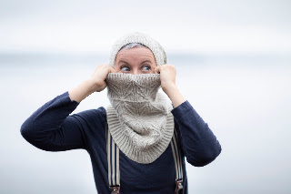
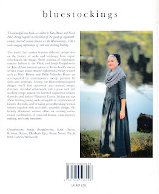

 |
| The Watchtower from the Saltings (Photo Tom Barr) |
{kind=link}
‘It’s a t-tower,’ said David.
Xanthe loved the way he said it with a shiver of excitement in his voice.
‘It’s in the m-middle of a f-field and it looks right down the r-river.’
‘And when it was wartime the Navy built it so they could keep a lookout against invaders,’ added Kieran. ‘Then p-zow they’d press a button and the whole river would go up. They’d laid mines.’
No one was noticing Siri. Not even Kelly-Jane.
‘It’s mainly used for storage now,’ Kieran carried on, ‘But there’s a room on the top floor where we’re all going to sleep together like we’re in a tent or something.’ (Black Waters p222)
Never mind poor little Siri, or even the history tutor Mrs Oakenheart, who comes in later. But do you remember Margery Allingham’s description of the ‘Flinthammock’ railway in her autobiographical The Oaken Heart? She describes the ‘nice little train with a high-pitched tootle and a fearsome tendency to rock like a boat in the high winds from over the saltings.’ That's the direction I was headed.
 |
| The train on the Tollesbury saltings (Mersea Museum) |
{kind=link}
The train and its track are long gone but the saltings don’t change much. And, for local historians, here's what Essex Heritage says about the tower:
So now we begin to loop the yarn upon the needle...
A smiling figure in a pixie hat, a ruched black dress, which
might have been taffeta, knitted stockings and a cream, cable-patterned
cardigan was waiting to open the locked gates. Some good witch of the marshes?
No, this was Scottish designer – and Margery Allingham fan – Kate Davies. The
watchtower had become a holiday let, called the Hexagon. Kate, her husband Tom and
their dogs were there to explore the Allingham atmosphere, wide skies and subtle
colouring, bleak yet intricately patterned – a network of twisting channels and
small mud islands.
My heroine Xanthe had seen a photo of the saltings taken
from the air ‘They looked like the inside of a brain,’ she thought. (Black
Waters p37) Tom and the dogs were out there now, walking the river wall and
the marshes, taking photographs. You can watch his aerial video at the end of
this blog. Not a brain perhaps, but a maze? A twisting, looping, pick one, purl
one, drop stitch, moss stitch, complex landscape where you’d need a kindly
pixie to guide you though. Or a knitwear designer?
 |
| Kate Davies - Scottish sprite? (Tom Barr) |
{kind=link}
Kate took me to the top of the tower. There was the river, the marina, the former power station, the bright red lightship that I’d called Godwyn but never liked to go aboard in case its custodians turned out to be villains. (Sometimes you just don’t know where a plot or a pattern will take you.) We settled comfortably in the newly built gazebo, she cut us slices of a rich fruit cake and begun to tell her tale:
Once upon a time Kate had been a lecturer in English
literature, specialising in the c18th century and with a promising academic
career ahead of her. Then, when she was only 34, she was walking to work one
day when she suffered a disabling stroke. Her left side was paralysed, and she
was lucky to survive. Magically a friend suggested she might learn to knit –
probably wrapping her fingers round needles as thick as young telegraph poles –
just to help her learn to use her left arm again. Kate persevered, the movement
returned and her intellect began considering pattern design.
Remember how Margery loved patterns? The ones you sense are
there, unfolding in the ways you can’t anticipate, and where the crucial
question you have to discover is who is pulling the strings? Which is the clue
that will take you through? Will you discover a minotaur when you reach the heart
of the maze?
 |
| Back cover of Kate's Bluestockings book ( https://www.shopkdd.com/bluestockings) |
{kind=link}
Kate didn’t return to her former academic life. She
discovered she could earn a living from digital pattern design. Then her
creativity began to blossom, like sea lavender across the saltings. She showed me
some of her books to explain how her projects worked. Perhaps this most immediately
apt is Bluestockings where she examines the lives of seven intellectual
women from the c18th, writes a profile of each (or commissions an essay), then
gifts them a pattern. Often these are … blue stockings, but not necessarily.
Readers can knit Kate’s original designs, they can learn about c18th dyestuffs,
they can be helped with techniques like ‘stocking blocking’, they can buy
specialist yarns, they can become part of a community of knitters and readers.
This summer Kate is plotting a Summer of Mystery, with
Margery Allingham at its heart. There will be ten novels to read, ten patterns
to follow, essays, discussion groups and a mystery ‘knitalong’ with fortnightly
clues Then finally a new book.
Here’s Kate’s introductory blog; https://katedaviesdesigns.com/2024/04/08/why-margery-allingham/
Tom’s wheeling, hawk’s-eye
vision https://needled.files.
and a little more from my own Xanthe, who has been studying with Mrs
Oakenheart.
Only fishermen and samphire-gatherers and wild-fowlers understood these secret ways and they were all gone. And so were the smugglers who’d sculled ashore with muffled oars and felt their way to private landing places and hasty, whispered conversations. If these pools and runnels could speak, they’d have some tales to tell… (Black Waters p38)
All of us inspired by Margery. Now, who’ll pick up the first
stitch?
{kind=link}
or, for general information, my own website https://golden-duck.co.uk/